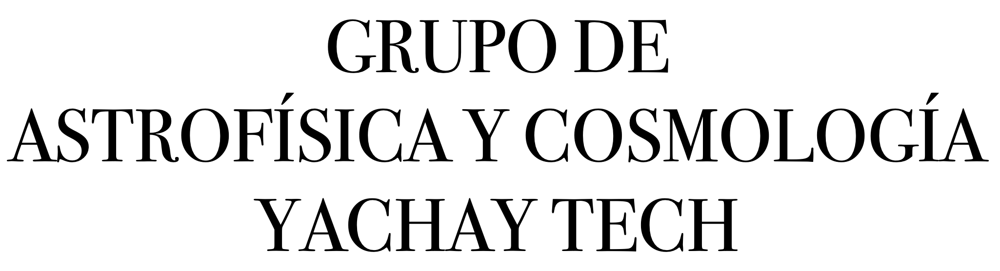
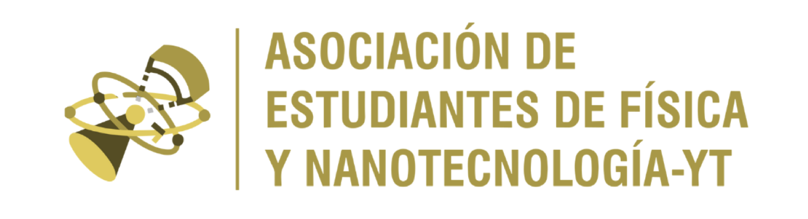
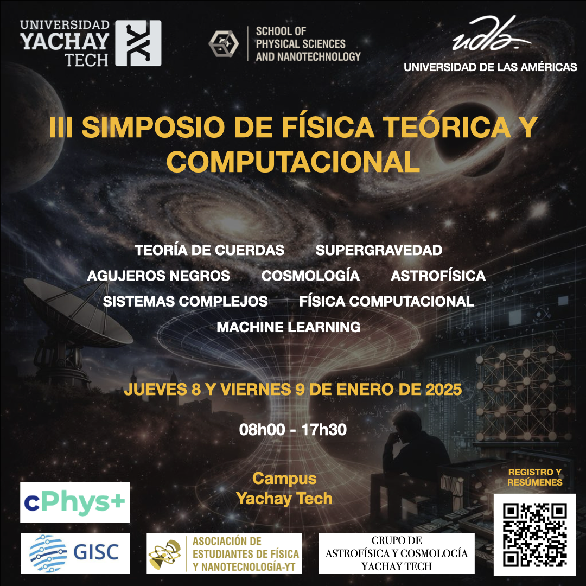

Acerca del Simposio
El III Simposio de Física Teórica y Computacional reúne a expert@s y estudiantes de pregrado y posgrado.
Tiene como objetivo el compartir avances y perspectivas en los campos teóricos y numéricos de la física.
La primera y segunda ediciones del simposio se realizaron en enero de 2024 y 2025 y tuvieron 1-2 días de duración.
Este año hemos decidido realizarlo en 2 días (formato presencial) e incluir temas relacionados a:
Física Teórica, teoría de cuerdas y gravedad
Relatividad General, Astrofísica y Cosmología
Sistemas Complejos y Caos
Física Computacional y Machine Learning
Conferencistas
Pablo Bueno, Universidad de Barcelona, España (Física Teórica)
Jonathan Quirola Vásquez, Radboud University, Holanda (Astrofísica)
Paul Sánchez, University de Colorado Boulder, EEUU (Astrofísica)
Orlando Alvarez Llamoza, Universidad Católica de Cuenca, Ecuador (Sistemas Complejos)
Mikaela Carrasco Hidalgo, Internacional Centre for Theoretical Physics, Italia (Física Teórica)
Ernesto Camacho Iñiguez, Pontificia Universidad Católica de Chile (Astrofísica)
Mario Cosenza, Universidad Yachay Tech, Ecuador (Sistemas Complejos)
Andrés Morales Navarrete, Universidad de las Américas (Física Computacional / IA)
Jennifer Chacón Chávez, Pontificia Universidad Católica de Chile (Astrofísica)
Nicolás Vásquez, Escuela Politécnica Nacional, Ecuador (Astrofísica)
Paulina Quijia Pilapaña, Northumbria University, Reino Unido (Astrofísica)
Osmer Suárez López, Universidad Andrés Bello, Chile (Astrofísica)
Álvaro Martínez Gómez, Charles University, República Checa (Física Teórica)
Orlando Gutiérrez Proaño, Escuela Politécnica Nacional, Ecuador (Física Computacional)
Marcelo Anda, Escuela Politécnica Nacional, Ecuador (Física Teórica)
Daysi Quinatoa, Escuela Politécnica Nacional, Ecuador (Astrofísica)
Daniela Merizalde, USFQ, Ecuador (Física de Partículas)
Organizadores
Oscar Lasso, Universidad de las Américas (Física Teórica)
David Andrade, Universidad Yachay Tech (Física Teórica)
Clara Rojas, Universidad Yachay Tech (Cosmología)
Helga Dénes, Universidad San Francisco de Quito (Astrofísica)
Wladimir Banda-Barragán, Universidad Yachay Tech (Astrofísica)
Programa
Jueves 8 de enero de 2026
El 1er día del simposio se llevará a cabo en formato presencial en el siguiente horario:
| Hora | Actividad | Tema |
|---|---|---|
| 07h40 - 08h00 | Registro y Bienvenida | -- |
| 08h00 - 08h20 | Helga Dénes (USFQ, ECUADOR) |
Why study astrophysics? |
| 08h20 - 09h00 | Nicolás Vásquez (EPN, ECUADOR) |
Influencia de las estrellas masivas en su vecindario |
| 09h00 - 09h20 | Osmer Suárez López (Universidad Andrés Bello, CHILE) |
Tracing the Missing Baryons in the Warm–Hot Intergalactic Medium with IllustrisTNG |
| 09h20 - 09h40 | Angel Rodriguez Ocaña (Yachay Tech, ECUADOR) |
Study of Scalar Cosmological Perturbations |
| 09h40 - 10h00 | Mikaela Carrasco Hidalgo (ICTP, ITALIA) |
Escalarización Espontánea de Agujeros Negros |
| 10h00 - 10h40 | Pósters y Refrigerio | -- |
| 10h40 - 11h20 | Pablo Bueno (Universidad de Barcelona, ESPAÑA) |
Objetos Exóticos Compactos (ECOs) desde el abismo |
| 11h20 - 12h00 | Óscar Lasso (UDLA, ECUADOR) |
Geometría, curvatura y termodinámica |
| 12h00 - 12h10 | Óscar Lasso (UDLA, ECUADOR) |
El rol y misión de la Sociedad Ecuatoriana de Física |
| 12h10 - 14h00 | Almuerzo | -- |
| 14h00 - 14h20 | Álvaro Martínez Gómez (Charles University, REP. CHECA) |
Double copy: Gravity from Yang-Mills square |
| 14h20 - 15h00 | Paul Sánchez (University of Colorado Boulder, EEUU) |
Memoria y Resistencia Mecánica del interior de Asteroides |
| 15h00 - 15h40 | Jonathan Quirola Vásquez (Radboud University, HOLANDA) |
Una nueva era para los transitorios rápidos de rayos X extragalácticos |
| 15h40 - 16h20 | Presentaciones de Pósters y Refrigerio | -- |
| 16h20 - 16h40 | Jennifer Chacón Chávez (PUC, CHILE) |
Cuando el cielo parpadea: identificando contrapartes ópticas de transitorios rápidos en rayos X |
| 16h40 - 17h00 | Ernesto Camacho Iñiguez (PUC, CHILE) |
Insights on optical variability of Intermediate-mass Black Holes and small-SMBHs |
| 17h00 - 17h10 | Ángel Salazar Guamán (Yachay Tech, ECUADOR)) |
Modelling the dynamics of neutral hydrogen (HI) in the interacting galaxy system Arp86 |
| 17h10 - 17h20 | Mariannly Marquez (Yachay Tech, ECUADOR) |
The Art of Gluing Spherically Symmetric Spacetimes: Matching Conditions in 1+3 Formalism of General Relativity for Astrophysical Scenarios |
| 17h20 - 17h30 | Jorge Gallegos Maldonado (ESPOCH, ECUADOR) |
Intercambio Energético entre un politropo y un fluido tipo Wyman IIa |
| 17h30 - 17h40 | Anuncios | -- |
Viernes 9 de enero de 2026
El 2do día del simposio se llevará a cabo en formato presencial en el siguiente horario:
| Hora | Actividad | Tema |
|---|---|---|
| 07:40 - 08:00 | Registro y Bienvenida | -- |
| 08:00 - 08:20 | Wladimir Banda Barragán (Yachay Tech, ECUADOR) |
Enigmas del Cosmos |
| 08:20 - 09:00 | Mario Cosenza (Yachay Tech, ECUADOR) |
Self-Control of escape in coupled chaotic systems |
| 09:00 - 09:40 | Orlando Alvarez Llamosa (Universidad Católica de Cuenca, ECUADOR) |
Identical Chaotic Systems with Nonidentical Synchronization |
| 09:40 - 10:00 | Franklin Limaico (Yachay Tech, ECUADOR) |
A Python framework for the analytical and numerical exploration of the Chen system |
| 10:00 - 10:40 | Presentaciones de Pósters | -- |
| 10:40 - 11:00 | Orlando Gutiérrez Proaño (EPN, ECUADOR) |
Indice de Radiación Ultravioleta en Regiones Ecuatorianas |
| 11:00 - 11:20 | Paulina Quijia Pilapaña (Northumbria University, REINO UNIDO) |
Using Unsupervised Machine Learning to Identify Magnetic Reconnection in the Earth’s Turbulent Magnetosheath |
| 11:20 - 12:00 | Andrés Morales Navarrete (UDLA, ECUADOR) |
From embryos to tissues: Decoding biological systems with AI and Physics |
| 12:00 - 12:10 | Eventos de la Comunidad | Conferencia eSPACE 2026, Escuela de Programación EPIC 5 |
| 12:10 - 14:00 | Almuerzo | -- |
| 14:00 - 14:10 | Yorlan Males-Araujo (Yachay Tech, ECUADOR) |
Being complex is kinda cool: Role of radiation in the CGM morphology |
| 14:10 - 14:20 | Alexander Sarango Torres (ESPOCH, ECUADOR) |
Modelo de un gravastar con complejidad nula |
| 14:20 - 14:40 | Daniela Merizalde Aguirre (USFQ, ECUADOR) |
Adaptaciones al modelo de análisis de datos para detectores Cherenkov |
| 14:40 - 15:20 | Daysi Quinatoa (EPN, ECUADOR) |
Tracing Molecular Gas and Dust in VALES Galaxies |
| 15:20 - 15:40 | Marcelo Anda Chavarría (EPN, ECUADOR) |
Simulating Spin Network Amplitudes in LQG on IBM Quantum Computers with Error Correction Codes |
| 15:40 - 15:50 | Lizbeth Lara (Yachay Tech, ECUADOR) |
Cold Neutral Medium Structure in the Halo of the Milky Way |
| 15:50 - 16:00 | Despedida y Premiación al Mejor Póster | -- |
| 16:00 - 17:40 | Reuniones de Trabajo | -- |
Resúmenes
Pablo Bueno (Universidad de Barcelona, España), Objetos Exóticos Compactos (ECOs) desde el abismo.
¿Qué tan compacto puede ser un objeto? En esta charla estudiaremos los límites físicos que gobiernan esta cuestión, desde sistemas cotidianos hasta los regímenes relativistas más extremos. Introduciremos la noción de Objetos Exóticos Compactos (ECOs) y revisaremos algunos candidatos teóricos —como estrellas de quarks, estrellas de bosones, gravastars, agujeros negros regulares, agujeros de gusano o fuzzballs— que podrían imitar muchas de las propiedades observacionales de los agujeros negros. Finalmente, discutiremos cómo la detección de ondas gravitacionales y, en particular, la posible aparición de “ecos” tras la fusión de objetos ultracompactos, podría ayudar a revelar su verdadera naturaleza.
Óscar Lasso (UDLA, Ecuador), Geometría, curvatura y termodinámica.
En esta conferencia hablaremos sobre las propiedades geométricas de algunas superficies que se forman alrededor de los agujeros negros y algunos objetos ultra compactos. Presentaremos los detalles de la construcción de las superficies, sus curvaturas intrínseca y algunos resultados recientes que las relacionan con propiedades termodinámicas. Finalmente hablaremos de algunos avances y problemas abiertos en espacios asintóticamente (anti) de Sitter.
Paul Sánchez (Universidad de Colorado Boulder, EEUU), Memoria y Resistencia Mecánica del interior de Asteroides.
Aunque hace muchos años los asteroides fueron considerados como “la peste del cielo” (the vermin of the sky), desde hace algunas décadas han sido objeto de varias misiones espaciales. Aunque es mucho lo que hoy conocemos sobre ellos, aún hay mucho que desconocemos, en especial sobre su origen, evolución y mecánica interna. Misiones a los asteroides Itokawa, Bennu y Ryugu, llevadas a cabo por NASA (EEUU) y JAXA (Japón) trajeron muestras de las superficies de estos asteroides, dándonos por primera vez la oportunidad de analizar materiales que no habían sido modificados al quemarse en su paso por la atmósfera terrestre. Algunas de sus características químicas y mecánicas han sido ya encontradas; sin embargo, la estructura interna de estos, así como de otros muchos asteroides es aún un misterio. La verdad es que la única parte que es visible en un asteroide, así como en cualquier otro cuerpo celeste, es su superficie, pero se pueden hacer cálculos y simulaciones para inferir su interior. Es decir, se puede suponer un interior, simular la evolución del asteroide y ver si coincide con lo observado, las sondas espaciales miden el campo gravitatorio y de él se extrae una posible estructura interna, pero la solución no es única. En esta investigación, decidimos dar un paso hacia atrás y simular la aglomeración gravitacional de una nube de partículas, el posible producto de un impacto entre dos asteroides más antiguos, para establecer si existe una relación entre la estructura de la superficie, del interior, y la de la nube original de partículas. En esta charla mostraremos algunos de nuestros primeros resultados así como sus implicaciones para futuras investigaciones.
Jonathan Quirola Vásquez (Radboud University, Holanda), Una nueva era para los transitorios rápidos de rayos X extragalácticos.
Los Transitorios Rápidos de Rayos X (FXT por sus siglas en ingles) Extragalácticos son destellos de rayos X que duran entre minutos y horas. Su naturaleza no está clara, pero los escenarios más notables relacionados con ellos son las supernovas de ruptura de choque, los eventos de disrupción de marea que involucran estrellas enanas blancas y agujeros negros de masa intermedia, y las fusiones de estrellas de neutrones binarias. Observarlos con instalaciones de diferentes longitudes de onda en las horas y días posteriores a la emisión de rayos X es esencial para comprender su naturaleza. En esta charla, analizaré los resultados más importantes de los FXT (por ejemplo, su energética, galaxias anfitrionas y progenitoras) detectados por la misión Einstein Probe.
Mario Cosenza (Yachay Tech, Ecuador), Self-Control of escape in coupled chaotic systems.
Escape of trajectories is a common feature of nonlinear dynamical systems, often triggered by varying parameters beyond critical values. While usual methods rely on external perturbations to suppress escape, in this talk, we present an alternative mechanism for controlling escape in coupled chaotic systems—without external interventions. Using the tent map and Linz–Sprott chaotic flow as dynamical units, we show that escape can be controlled autonomously in networks of coupled units with global or sufficiently long-range interactions. This self-organized stabilization is an emergent collective behavior, demonstrating a fundamental property of complex systems: macroscopic order arising from the interactions of simple units without the need for external influences.
Orlando Alvarez Llamoza (Universidad Católica de Cuenca, Ecuador), Identical Chaotic Systems with Nonidentical Synchronization.
Synchronization of chaos is a common phenomenon in unidirectionally coupled systems, where one can distinguish a drive (forcing) subsystem and a driven (response) subsystem. Complete synchronization occurs when all state variables of the driven system converge to the same trajectory in phase space as the drive. In contrast, generalized synchronization arises when a nontrivial functional relationship, distinct from the identity, is established between the drive and response subsystems. In this work, we investigate the emergence of both synchronization regimes in systems where the drive and response subsystems are governed by identical chaotic dynamics. As a minimal model, we consider a single chaotic map unidirectionally driven by an identical map. We show that both complete and generalized synchronization can occur even when the drive and response maps are the same. The transition between generalized and complete synchronization is characterized using the Lyapunov exponents of the resulting two-dimensional drive–response system. We further extend this analysis to a system of N chaotic maps uniformly driven by a common identical map. Our results demonstrate that the synchronization states are determined by the coupling parameters rather than the initial conditions. We analytically derive the regions in parameter space where complete and generalized synchronization emerge. Notably, the existence of generalized synchronization between identical drive and response systems constitutes a novel and counterintuitive result.
Andrés Morales Navarrete (UDLA, Ecuador), From embryos to tissues: Decoding biological systems with AI and Physics.
Biological systems display complex organization across scales, from embryonic development to mature tissues. In this talk, I present an interdisciplinary approach that combines theoretical physics, artificial intelligence, and image-based modeling to extract organizational principles directly from large-scale microscopy data. Using examples from embryos and liver tissue, I show how interpretable machine learning models reveal geometric, collective, and dynamical features of multicellular systems. This framework bridges data-driven AI with physical insight, enabling quantitative understanding of development, tissue organization, and disease.
Daysi Quinatoa (EPN, Ecuador), Tracing Molecular Gas and Dust in VALES Galaxies .
This talk presents an analysis of the dust-to-gas ratio and CO excitation in 37 massive star-forming galaxies from the Valparaíso ALMA Line Emission Survey (VALES). Using ALMA observations of CO(1–0), CO(3–2), and 867 µm dust continuum emission, we investigate how dust traces molecular gas and explore excitation conditions through the CO(3–2)/CO(1–0) ratio. VALES galaxies follow established dust–gas calibrations and show intermediate excitation between normal star-forming galaxies and ULIRGs, indicating a diverse population spanning extended disks and compact starburst systems.
Resúmenes de Pósters y Mini-Charlas
Osmer Suárez López (Universidad Andrés Bello, Chile), Tracing the Missing Baryons in the Warm–Hot Intergalactic Medium with IllustrisTNG.
A significant fraction of baryons predicted by the ΛCDM model remains undetected at redshift z = 0, likely residing in a diffuse, low-density phase that is difficult to detect observationally Cosmological simulations suggest that these missing baryons reside in the warm–hot intergalactic medium (WHIM), predominantly embedded in the filamentary structure of the cosmic web. In this context, cosmological hydrodynamical simulations provide a fundamental tool to identify and characterize the WHIM within coherent filamentary regions and their observable absorption features. We use the IllustrisTNG simulations, specifically TNG300, to develop strategies to detect the missing baryons through comparisons with synthetic HI and OVI absorption spectra. The selection of a coherent filamentary structure is based on the spatial distribution of the WHIM allowing us to trace multiple synthetic rays within a defined region. Using Trident, we generate HI and OVI absorption spectra, and derive column densities, Doppler parameters, and equivalent widths for comparison with observational measurements. We find that filament hosts substantial amounts of WHIM gas with multiphase properties and absorption statistics consistent with observational studies. The distribution of Doppler parameters and equivalent widths confirms that OVI line broadening and absorption strength correlate with the presence and amount of WHIM intercepted by along each ray.
Angel David Rodriguez Ocaña (Universidad Yachay Tech, Ecuador), Study of Scalar Cosmological Perturbations.
In this work, we present the study of the scalar cosmological perturbations of a single field inflationary model up to the first order in deviation. The Christoffel symbols and the tensor quantities are calculated explicitly as a function of the cosmic time 't'. The Einstein equations are solved up-to the first order in deviation, and the scalar perturbations equation is derived.
Mikaela Carrasco Hidalgo (ICTP, Italia), Escalarización Espontánea de Agujeros Negros.
La escalarización espontánea es un mecanismo en teorías alternativas de la gravedad en el cual los campos escalares permanecen inactivos en regímenes de campo débil, pero se excitan dinámicamente en entornos de gravedad fuerte, como agujeros negros o estrellas compactas. En esta charla me centraré en agujeros negros de Reissner–Nordström escalarizados y en extensiones que incorporan electrodinámica no lineal, incluyendo modelos tipo power–Maxwell. También discutiré cómo estos sistemas pueden describirse de manera consistente dentro del formalismo P-dual, destacando su utilidad para la construcción y el análisis de soluciones escalarizadas.
Álvaro Martínez Gómez (Charles University, República Checa), Double copy: Gravity from Yang-Mills square.
The double copy is a relatively recent duality relating gravity and gauge theories at the level of scattering amplitudes. Interestingly, the structures that underpin this duality also emerge in certain classical field theory solutions. The classical double copy can thus be viewed as the counterpart of the amplitude-level duality within perturbative quantum field theory. In this talk, I will briefly review the double copy framework and present one of its classical realizations, the Kerr–Schild double copy, focusing in particular on the Janis–Newman–Winicour (JNW) spacetime as a proposed double copy of the Coulomb Yang–Mills solution. To connect amplitude methods with classical physics, I will discuss the scattering angle as a classical observable that may reflect a new form of the double copy at the level of the dynamics of test particles moving in backgrounds that admit a Kerr–Schild double copy.
Jennifer Chacón Chávez (PUC, Chile), Cuando el cielo parpadea: identificando contrapartes ópticas de transitorios rápidos en rayos X.
El fortalecimiento del ecosistema de seguimiento óptico de transitorios rápidos en rayos X (FXTs) constituye un eje central de mi tesis doctoral, orientada a acelerar la identificación de contrapartes y caracterizar el subconjunto más local de eventos detectados por el satélite Chino Einstein Probe (EP). Actualmente, EP reporta una tasa promedio de ~3 FXTs por semana, lo que exige una respuesta eficiente y coordinada. En este contexto, he consolidado una red de seguimiento que combina tiempo garantizado como Investigadora Principal (PI), de telescopios como VST y LCOGT Sinistro, y nuevos programas aprobados en Gemini y SOAR; junto con colaboraciones que extienden la red de telescopios como NOT, LT, GTC y VLT. La estrategia combina imágenes de referencia profundas, sustracción y reducción estandarizada de datos, y fotometría, permitiendo confirmar contrapartes en escalas de tiempo competitivas. Este enfoque busca identificar FXTs locales análogos a los previamente reportados por Chandra, XMM-Newton y Swift-XRT, avanzando hacia una caracterización poblacional en el régimen de menor luminosidad y un marco sistemático para la respuesta científica temprana a las alertas de EP.
Ernesto Camacho Iñiguez (PUC, Chile), Insights on optical variability of Intermediate-mass Black Holes and small-SMBHs.
Formation and early evolution of supermassive black holes (SMBHs) and their co-evolution with their host galaxies are unknowns that motivate the search for and study of intermediate-mass black holes (IMBHs; 100≲M☉≲1x106). The local population of IMBHs have remained relatively elusive, however, with considerable difficulty to detect, confirm, and characterize them. We investigate the optical variability properties of a large sample of spectroscopically selected IMBH candidates from the literature, specifically by analyzing repeated observations and precise forced photometry measurements on the difference images from the Zwicky Transient Facility. We compare and contrast the distribution of variability properties for IMBHs and SMBHs, investigate the multi-wavelength properties (X-ray, radio) for the outstanding subset of sources exhibiting strong variability features, and discuss implications for the AGN paradigm.
Ángel Salazar Guamán (Universidad Yachay Tech, Ecuador), Modelling the dynamics of neutral hydrogen (HI) in the interacting galaxy system Arp86.
Interacting galaxies are key to understanding how gravity shapes galactic structure and evolution, providing insights into gas dynamics, star formation, tidal interactions, and angular momentum redistribution. Neutral atomic hydrogen (HI) directly traces the diffuse gas most responsive to tidal forces. Arp86, composed of NGC 7753, NGC 7752, and 2MASX J23470758+2926531, shows strong tidal features and distortions, making it an excellent case study. We analyze HI observations of Arp86 from the APERTIF instrument on the Westerbork Synthesis Radio Telescope (WSRT). Using 3DBarolo, which fits inclined ring models to HI data, we reconstruct large-scale rotation of the galaxies and obtain maps of intensity, velocity, and velocity dispersion. We compare the maps from the dynamic models with the observed spectral line maps. By subtracting the models from the data, we obtain the maps of the residuals, which reveal gas structures beyond the regular rotation, including tidal arms, gas flows, and distortions. These residuals expose interaction-driven gas features essential for understanding the dynamic state of the system.
Mariannly Marquez (Universidad Yachay Tech, Ecuador), The Art of Gluing Spherically Symmetric Spacetimes: Matching Conditions in 1+3 Formalism of General Relativity for Astrophysical Scenarios.
We study matching conditions in the 1+3 covariant formalism of General Relativity, providing a consistent and general framework for spherically symmetric astrophysical scenarios involving discontinuity surfaces. Using kinematical and dynamical variables naturally defined in the 1+3 approach, we characterize spherical hypersurfaces by three key properties: their surface energy-momentum content, their capacity to shrink or grow while absorbing or emitting radiation, and their permeability. Based on these properties, we identify six distinct types of hypersurfaces: boundary layers, surface layers, conserved surface layers, shock fronts, impulsive shock fronts, and non-conserved impulsive shock fronts.
Jorge Gallegos Maldonado (ESPOCH, Ecuador), Intercambio Energético entre un politropo y un fluido tipo Wyman IIa.
Presento un estudio teórico sobre el intercambio de energía en el interior de un objeto estelar compacto, analizando la interacción entre un fluido politrópico relativista y un fluido isotrópico de tipo Wyman IIa mediante el enfoque de decuplación gravitacional por deformación geométrica mínima extendida (MGDe). Al imponer una condición mimic sobre la densidad de energía, obtengo una configuración anisotrópica efectiva que cumple los criterios fundamentales de aceptabilidad física para modelos estelares realistas. Los resultados indican que la transferencia de energía ocurre principalmente desde el fluido politrópico hacia el fluido Wyman IIa en las capas externas de la estrella, mientras que el núcleo permanece estable y sin intercambio energético. El modelo demuestra que se pueden obtener configuraciones físicamente viables siempre que se preserve la condición de energía fuerte, aportando una mejor comprensión de la dinámica interna y la estabilidad de sistemas relativistas multifluido.
Franklin Limaico (Yachay Tech, Ecuador), A Python framework for the analytical and numerical exploration of the Chen system.
The non-linear Chen system is a special case of the Lorenz attractor, and it is known to exhibit chaotic behaviour. The Chen system is used as a prototype dynamical system to study chaotic oscillators, chaotic circuits, chaotic cryptography and more. Here we report our own python-based code, developed to study the Chen system both analytically and numerically. On the analytical side, our code allows for the characterisation of fixed points, their stability, and the system bifurcations. On the numerical side, our code integrates the Chen system using both customised and SciPy-based Runge-Kutta methods. Using our integrators, we demonstrate the existence of three distinct evolutionary paths, namely the non-chaotic, transient to chaos and a chaotic regime. We show that the transition to chaos occurs at a critical value of $c_{H} \approx 25$, and report several 3D trajectory visualisations, including path divergences and a Poincaré map.
Paulina Quijia Pilapaña (Northumbria University, Reino Unido), Using Unsupervised Machine Learning to Identify Magnetic Reconnection in the Earth’s Turbulent Magnetosheath.
Turbulence is a fundamental process observed in astrophysical plasmas. In collisionless environments, turbulence naturally generates thin, intense current sheets where magnetic reconnection can occur. Reconnection is a process in which magnetic field lines break and reconnect, releasing magnetic energy, and is thought to play a crucial role in turbulence dynamics and energy dissipation. The Earth’s magnetosheath, a highly turbulent region, provides a natural laboratory for studying turbulence. The Magnetospheric MultiScale (MMS) mission offers high-resolution, multi-point observations of this region, well-suited for identifying turbulence-driven reconnection. However, identifying reconnection events within observations is challenging and time-consuming due to their localised nature, complex magnetic topologies, and the wide range of scales. We present an unsupervised machine learning framework to systematically identify reconnection sites in turbulent plasma observations. This approach requires key physical features that highlight reconnection sites as input. Then, the Toeplitz Inverse Covariance-Based Clustering (TICC) algorithm groups time-series data into distinct plasma structures based on their internal correlations. TICC successfully recovers known reconnection events and identifies new candidates. These candidates are then analysed in a local coordinate system aligned with the current sheet, where reconnection signatures become clearer and can be quantitatively characterised. A second unsupervised classification step distinguishes true reconnection events from false positives. This approach enables the construction of statistically robust catalogues of turbulence-driven reconnection events, supporting systematic studies of energy dissipation in space plasmas.
Yorlan Males-Araujo (Yachay Tech, Ecuador), Being complex is kinda cool: Role of radiation in the CGM morphology.
How does cloud morphology in the Circumgalactic Medium (CGM) change when allowed to radiate? We analyze both general and clump properties from two identical turbulent hydrodynamical simulations that differ only in the presence of radiative cooling and heating mechanisms. Comparing adiabatic versus radiative cases, we find that these mechanisms strongly affect physical properties: the radiative one exhibits higher densities, lower temperatures and transonic behavior, and clumps with higher surface complexity (fractal dimension), almost twice the population and a smaller volume filling factor than the adiabatic case. These findings suggest that radiative processes fundamentally alter CGM cloud properties, producing the fragmented, complex structures observed in such medium.
Alexander Sarango Torres (ESPOCH, Ecuador), Modelo de un gravastar con complejidad nula.
Modelos teóricos como los gravastars han surgido con el fin de resolver problemas asociados a los agujeros negros como la singularidad y la paradoja de la información. Este trabajo presenta un nuevo modelo de gravastar con complejidad nula, una condicion útil para el estudio de cuerpos estelares complejos. Para ello, se utilizó el método de desacoplamiento gravitacional (GD) bajo el enfoque de deformación geométrica mínima extendida (MGDe). Los resultados demuestran que la nueva solución de gravastar obtenida es un modelo físicamente aceptable que podría emplearse para el estudio de sistemas mas complejos.
Orlando Gutiérrez Proaño (EPN, Ecuador), Indice de Radiación Ultravioleta en Regiones Ecuatorianas.
Este estudio analiza la variación del índice de radiación ultravioleta (UV) en distintas regiones del Ecuador entre 2014 y 2023, utilizando datos de estaciones ubicadas en la Sierra, Costa y región Insular. Los resultados muestran una relación directa entre la altitud y la intensidad de la radiación UV, siendo mayor en zonas de elevada altitud debido a la menor atenuación atmosférica. Dada la ubicación ecuatorial del país, los niveles de radiación UV son altos durante todo el año, lo que resalta la necesidad de fortalecer medidas de fotoprotección, especialmente en la región Sierra. Estos hallazgos aportan información relevante para el diseño de estrategias de salud pública, concientización y adaptación climática frente a la exposición prolongada a la radiación UV.
Daniela Merizalde Aguirre (USFQ, ECUADOR), Adaptaciones al modelo de análisis de datos para detectores Cherenkov.
El Observatorio Gigante Latinoamericano (LAGO) detecta rayos cósmicos y fenómenos de clima espacial mediante una red de detectores Cherenkov de agua (WCD). La reciente incorporación de nuevo hardware con mayor resolución temporal requiere la actualización de los algoritmos de limpieza existentes. En este trabajo presentamos una mejora del algoritmo basada en la medición del espectro de Michel, en lugar de la tradicional joroba de muones. Para ello, se implementa un modelo de aprendizaje automático por agrupaciones OPTICS, logrando una mejor identificación de partículas en señales adquiridas con el nuevo hardware de LAGO.
Marcelo Anda Chavarría (EPN, ECUADOR), Simulating Spin Network Amplitudes in LQG on IBM Quantum Computers with Error Correction Codes.
In this work, we construct a qubit of space, which can be understood as the binary encoding of a quanta of geometry within the framework of Loop Quantum Gravity. Building on this construction, we design and prepare maximally entangled spin networks in monopole and dipole configurations, and evaluate their transition amplitudes and probability distributions via projective measurements in the computational basis. Given the sensitivity of superconducting processors to noise (decoherence, gate errors, and readout errors), particularly in the multi-qubit regime, we integrate error-mitigation techniques (e.g., readout calibration and correction) to improve the fidelity of the estimates and the robustness of the results.
Lizbeth Lara (Yachay Tech, ECUADOR), Cold Neutral Medium Structure in the Halo of the Milky Way.
One of the most important components of the interstellar medium in our Galaxy is the neutral atomic hydrogen (HI). HI is predominantly found in the disk of the Galaxy. However, various processes, such as galactic winds, can expel a significant fraction of the HI above the Galactic plane into the halo of the Milky Way. In this work, we show that the new revolutionary technology in observations allows combining HI emission-absorption wide-field surveys to be a powerful tool to map HI spatial distribution, allowing us to study the properties of the cold phase of HI gas at high galactic latitudes. We have analyzed HI emission and absorption spectra in ∼ 300 lines of sight in two different regions above the Galactic Plane Hydra at b ∼ 27◦ and Norma at b ∼-8◦. We calculate column densities using two different methods and find cold gas fractions between 2- 22% in the Norma field and 0- 6% in the Hydra field. Besides, we find an average spin temperature of ∼250 K for both the Norma and the Hydra fields.
Participantes
Ayrton Dilan Jarrín Chinchuña |
Alejandro Fabián Silva Castro |
Matias Arau Zanafria Varela |
Emilio José Clavón Quilachamin |
Eduardo Fernando Bastidas Valencia |
Mikaela Salomé Carrasco Hidalgo |
Jonathan Alexander Quirola Vasquez |
Paul Sebastián Albuja Nagua |
Abigail Rivadeneira |
Oscar Daniel Veloz Segarra |
Álvaro Rafael Martínez Gómez |
Quray Asarpay Potosí Dumaguala |
Ángel David Salazar Guamán |
Gabriel Eduardo Salvador Jiménez |
Nicole Andrade Velasco |
Orlando Vinicio Gutiérrez Proaño |
Jennifer Alexandra Chacón Chávez |
Andres Patricio Toledo Herrera |
Alexander Ramiro Sarango Torres |
Jorge Fabricio Gallegos Maldonado |
Elizabeth Chafla |
Osmer Alexander Suárez López |
Yorlan Males-Araujo |
Angel David Rodriguez Ocaña |
Britney Carolina Robalino Ramírez |
Juan Daniel Vasconez Vela |
Santiago Andrés Reascos Yépez |
Brittany Jimenez Arcos |
Luis Alexander Andrade Solórzano |
Mayelin Paola Placencia Delgado |
Ariel Sebastian Calderon Rodriguez |
Madelyn Dayanara Calderón Morán |
Samay Rumi Rojas Guaján |
Francisco Puente |
Andy Rubio Erazo |
Brigham Asier Echanique Mendoza |
Belen Athalía Chiluiza Amores |
Darío Javier Cabascango Chiliquinga |
Grace Camila Tanicuchí Benavides |
Daysi Quinatoa |
Daniel Sebastián Arias Toctaguano |
Jefferson Vaca |
Lizbeth Alexandra Lara Perugachi |
William Alexander Carvajal Morales |
Marco Alexander Panchi Herrera |
Daniela Alejandra Merizalde Aguirre |
Marcelo Antonio Anda Chavarría |
Edith Aguirre |
Carlos Reinoso Jerez |
Brithany Briggette Suárez Palacios |
Registro
Si deseas contribuir con un póster (estudiantes de pregrado y profesionales) o póster + charla (estudiantes de posgrado), ingresa el título y resumen de tu contribución a través del formulario.
Todas las contribuciones de estudiantes de pregrado tendrán un espacio para un póster.
Todas las contribuciones de estudiantes de posgrado tendrán un espacio para una charla corta + un espacio para un póster.
Los pósters deben presentarse en formato A0, de preferencia impresos en sentido vertical ("portrait").
Para registrarte, da clic en la imagen QR o visita este enlace: https://forms.gle/nAf9iVYtWe9xZAsu7.


Póster del Evento
